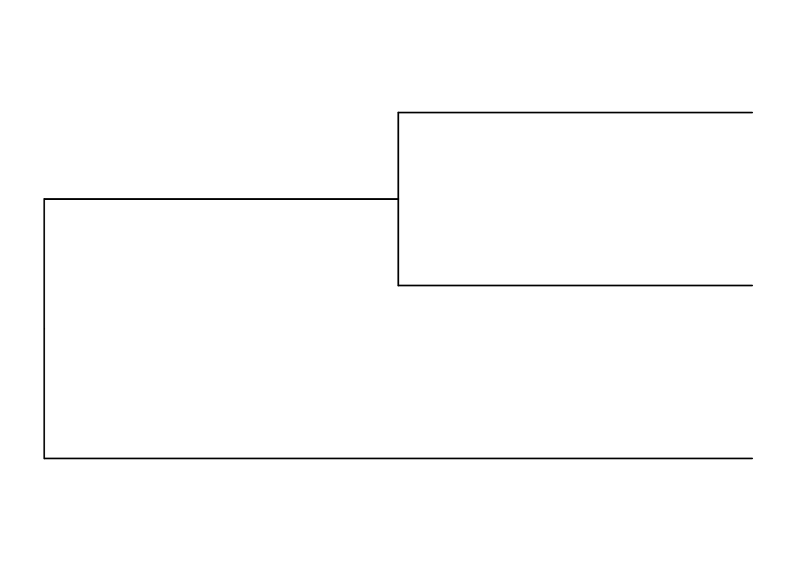
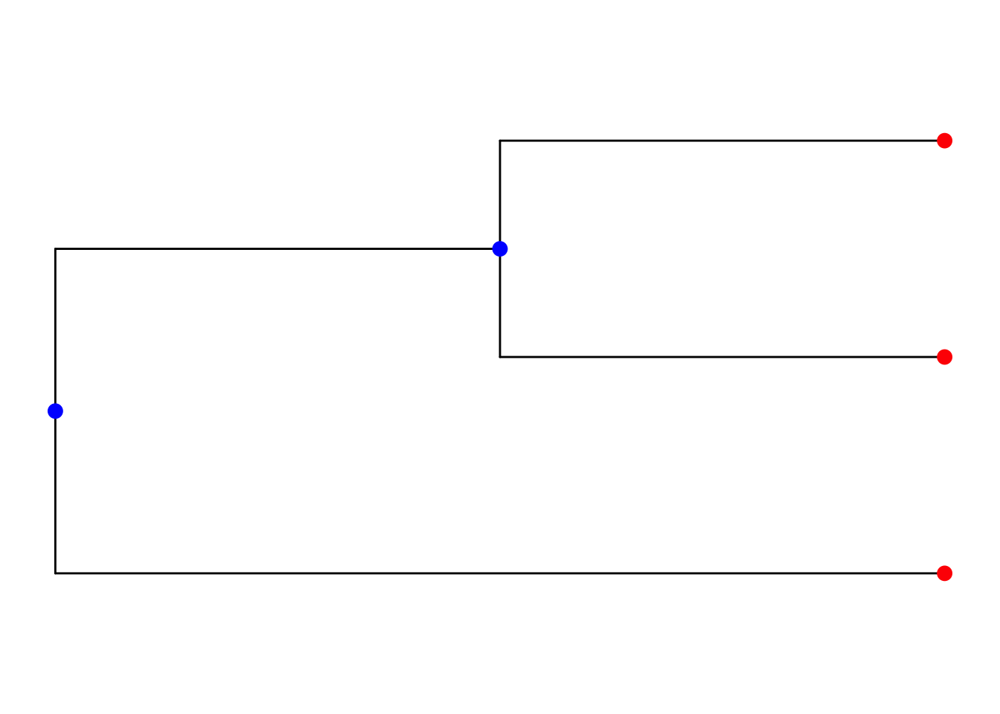
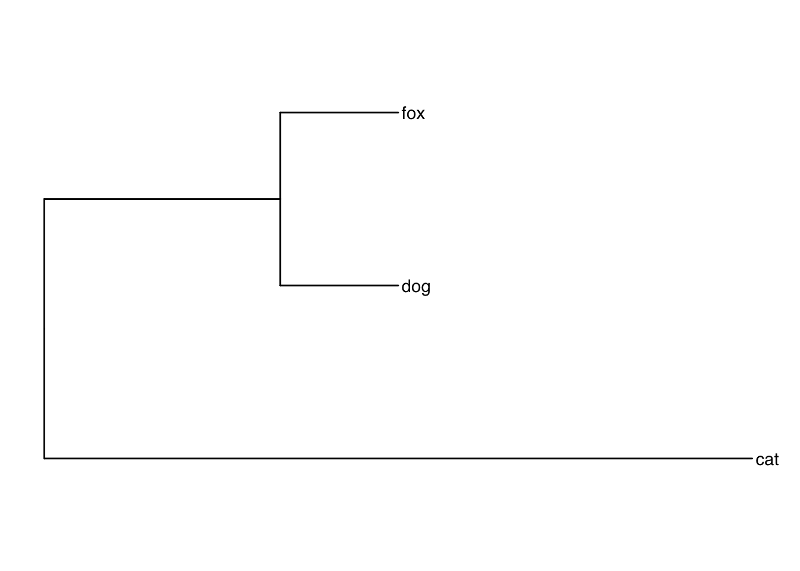
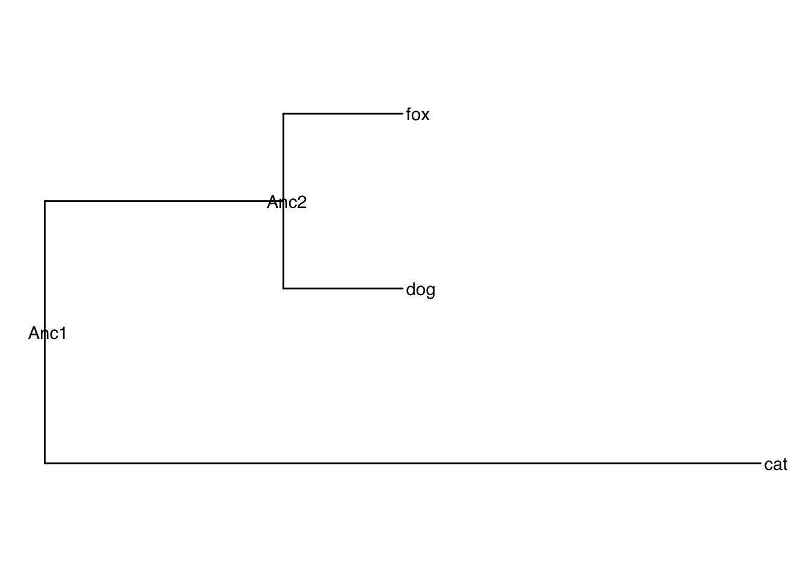
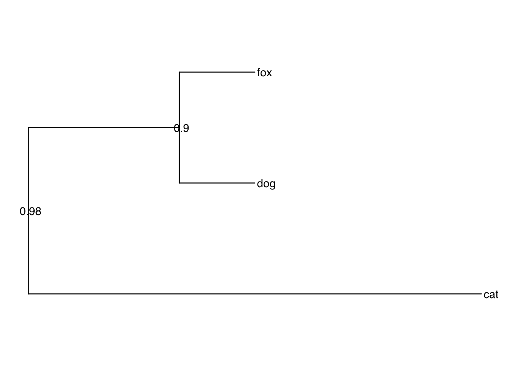
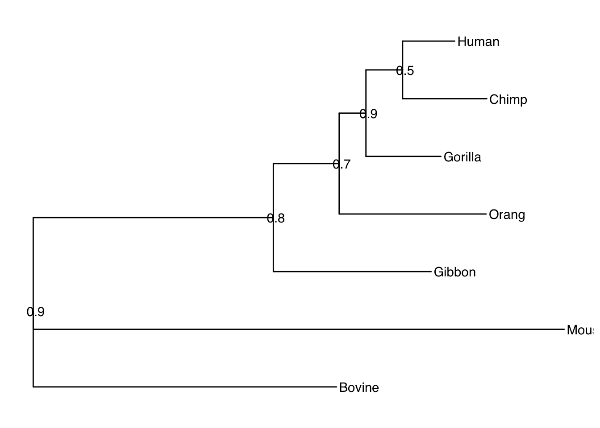

Chapter 2 Newick Format
Load the neccesary libraries for this section
Newick format is a way of representing a phylogeny (a tree) with parentheses and commas. Its basic elements are:
- Branches
- Nodes
- Leaves: Nodes with no descendants, also colled tip points
- Internal nodes: Nodes with descendants
A Minimal newick tree has only branches. There is a branch for each comma and each internal parenthesis pair.
Lets obtain this tree in phylo format
And now we can use ggtree to generate an image

Figure 2.1: A minimal newick tree
Here you can see tip points and internal nodes colored in red and blue, respectively

The tree leaves (tip points) can be labeled Labels correspond to clades (species, strains)

You can indicate different lengths for each branch The length reflects the amount of evolutionary change of the branch

You can also label internal nodes. Internal nodes are common ancestors for a group of leaves
tree<-"(cat:0.6,(dog:0.1,fox:0.1)Anc2:0.2)Anc1;"
tree<-read.tree(text=tree)
ggtree(tree)+geom_tiplab()+geom_nodelab()
… or instead of a node label you can use a bootstrap value Bootstrap values indicate the support of a given node. Here, the event with fox and dog having a common ancestor has a confidence of 0.9
tree<-"(cat:0.6,(dog:0.1,fox:0.1)0.9:0.2)0.98;"
tree<-read.tree(text=tree)
ggtree(tree,)+geom_tiplab()+geom_nodelab()
Here we have a more complex example
tree<-"(Bovine:0.69395,
(Gibbon:0.36079,
(Orang:0.33636,
(Gorilla:0.17147,
(Chimp:0.19268, Human:0.11927)0.5:0.08386
)0.9:0.06124
)0.7:0.15057
)0.8:0.54939,Mouse:1.21460)0.9;"
tree<-read.tree(text=tree)
ggtree(tree)+geom_tiplab()+geom_nodelab()